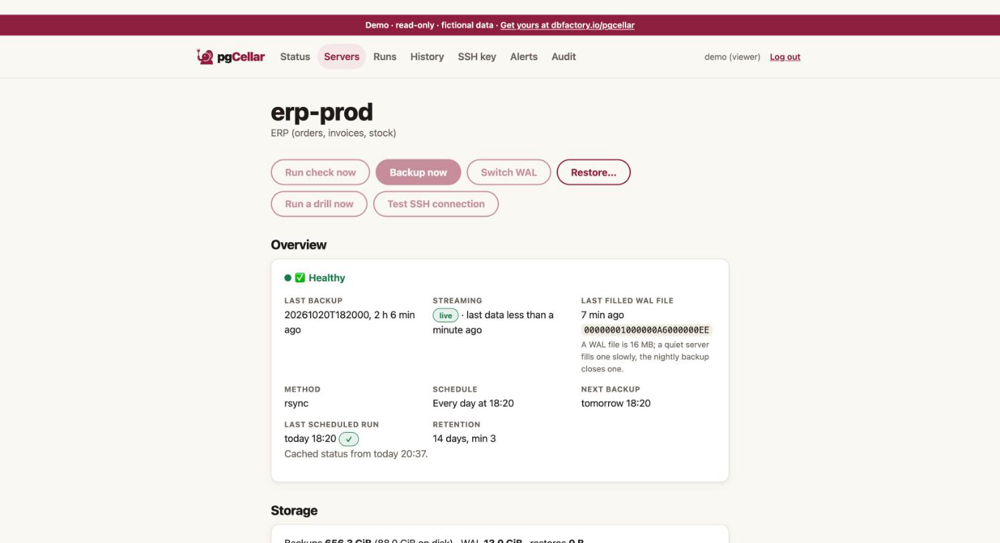
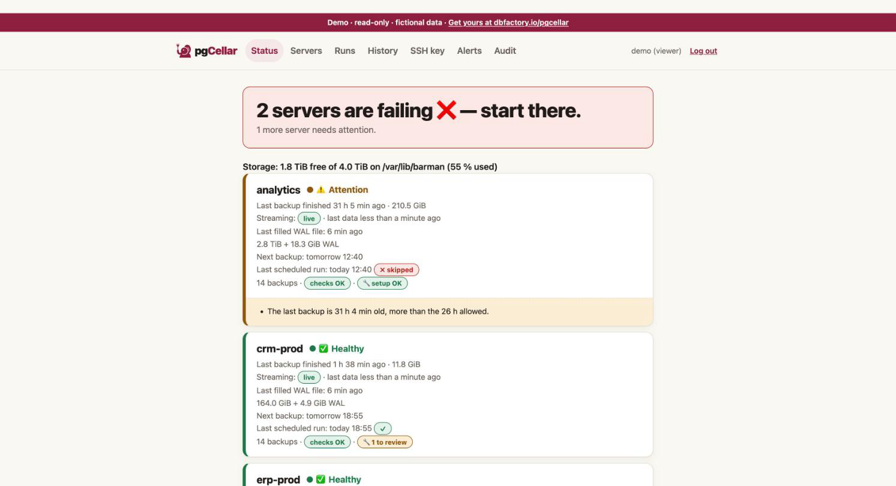

Getting started
By the end of this chapter you have pgCellar running in Docker, one PostgreSQL server added, a green barman check, and a first backup. Count five minutes if PostgreSQL is already prepared. If you still have to create the roles, chapter 3 has the commands.
You need:
- Docker (or Podman) with Compose, on a machine that can reach your PostgreSQL server over the network.
- A PostgreSQL server, version 13 to 18, where you can create two roles and edit
pg_hba.conf. - Disk space for the backups. Rule of thumb: one full copy of the database, plus the WAL of the retention period.
Get the files and build the image
git clone https://github.com/stranix79/pgcellar.git
cd pgcellar/deploy
mkdir etc-pgcellar etc-barman.d
cp pgcellar.example.yaml etc-pgcellar/pgcellar.yaml
docker compose build
The image is called pgcellar:dev. It contains pgCellar, an unmodified Barman from the PGDG packages, the PostgreSQL client tools, and the PostgreSQL server binaries that restore drills use (chapter 7).
Two folders are bind-mounted from the host: etc-pgcellar (your pgcellar.yaml) and etc-barman.d (one Barman file per server, written by the console). The container runs as the barman user, not as root, so these folders must be writable by that user. Find its uid and set the owner:
docker run --rm --entrypoint id pgcellar:dev barman
sudo chown -R 997:997 etc-pgcellar etc-barman.d
Use the uid the first command prints (997 in the current image). If you skip this step, pgCellar cannot save its configuration.
Create the first admin
pgCellar stores a bcrypt hash, never a password. Type the password once and keep the hash:
read -rs PW; printf '%s\n' "$PW" | docker run -i --rm pgcellar:dev hash-password
The password needs at least 8 characters. The command prints one line that starts with $2a$ or $2b$.
Edit etc-pgcellar/pgcellar.yaml:
- In
users:, replace the fakepassword_hashofadminwith your hash. - Set
base_urlto the address people will type, for examplehttp://backup.example.com:8080. It is used in links inside alerts and reports. - Delete the two example entries in
servers:. You add yours from the console. - Delete the fake entry in
api_keys:unless you want it.
Check the file:
docker run --rm -v "$PWD/etc-pgcellar:/etc/pgcellar" pgcellar:dev check --config /etc/pgcellar/pgcellar.yaml
You want to read all good at the end.
Start
docker compose up -d
Open http://localhost:8080 and sign in as admin.

The Status page is empty: no server yet. Compose also started a second container, pgcellar-ssh. It only matters when a server ships its WAL files with archive_command (chapter 4). For streaming you can ignore it.
Prepare PostgreSQL
pgCellar needs two roles on the PostgreSQL side and two lines in pg_hba.conf. Chapter 3 explains each one. Short version, as a superuser on the PostgreSQL server (PostgreSQL 15 or later):
CREATE ROLE barman LOGIN PASSWORD '...';
CREATE ROLE streaming_barman LOGIN REPLICATION PASSWORD '...';
GRANT pg_read_all_settings, pg_read_all_stats, pg_checkpoint TO barman;
GRANT EXECUTE ON FUNCTION pg_backup_start(text, boolean) TO barman;
GRANT EXECUTE ON FUNCTION pg_backup_stop(boolean) TO barman;
GRANT EXECUTE ON FUNCTION pg_switch_wal() TO barman;
GRANT EXECUTE ON FUNCTION pg_create_restore_point(text) TO barman;
In pg_hba.conf, with the address pgCellar connects from:
host all barman 10.0.0.5/32 scram-sha-256
host replication streaming_barman 10.0.0.5/32 scram-sha-256
Reload PostgreSQL (SELECT pg_reload_conf();). Then give the two passwords to the barman user inside the container, in ~/.pgpass. Barman and pgCellar both read this file, so no password ever sits in a config file:
docker compose exec -T pgcellar sh -c 'umask 077; cat >> ~/.pgpass' <<'EOF'
pg-main.example.com:5432:*:barman:THE_BARMAN_PASSWORD
pg-main.example.com:5432:*:streaming_barman:THE_STREAMING_PASSWORD
EOF
The file lives in /var/lib/barman, which is a volume, so it survives restarts.
Add the first server
In the console, open Servers, then Add a server. For a PostgreSQL server reachable over the network:
| Field | Value |
|---|---|
| Name | pg-main (lowercase letters, digits, -, _) |
| Backup method | postgres (streaming, no SSH) |
| WAL method | streaming |
| Connection string (conninfo) | host=pg-main.example.com user=barman dbname=postgres port=5432 |
| Streaming connection string | host=pg-main.example.com user=streaming_barman dbname=postgres port=5432 |
| Replication slot | barman |
| Retention | Recovery window 14 days, minimum redundancy 2 |
| Backup schedule | daily 02:00 |
Press Create server. pgCellar writes /etc/barman.d/pg-main.conf, adds the server to pgcellar.yaml, and commits both to git. The WAL method and the slot are explained in chapters 2 and 4.

First barman check
On the server page, press Run check now. Barman runs its checks and pgCellar explains every line in plain words, with what to do when one fails. Typical first failures: a password missing in .pgpass, a missing pg_hba.conf line, wal_level = minimal. The Server setup section reads the PostgreSQL settings and gives the exact ALTER SYSTEM commands (chapter 3).
Barman starts its WAL receiver by itself (pgCellar runs barman cron every minute). Once every line is green, the server is ready. A new server may say that no WAL has arrived yet; the first backup closes a WAL file and clears that.
First backup
Press Backup now. pgCellar runs barman backup pg-main, then forces a WAL switch so the backup can be restored right away. Follow it on the Runs page: it shows every command with its output and duration.

When it is done, the server is green on Status and the Timeline shows the first point in time you can restore to.

Where to go next
- Put the schedule in place: Backups, schedules and retention.
- Plan the first drill, so the backup is proven: Restore drills and reports.
- Set up alerts so you hear about problems: Alerts.
- Try pgCellar without any PostgreSQL:
make demoin the repository starts it on fictional data (logindemo/demo). A public demo runs at https://demo.pgcellar.dbfactory.io.